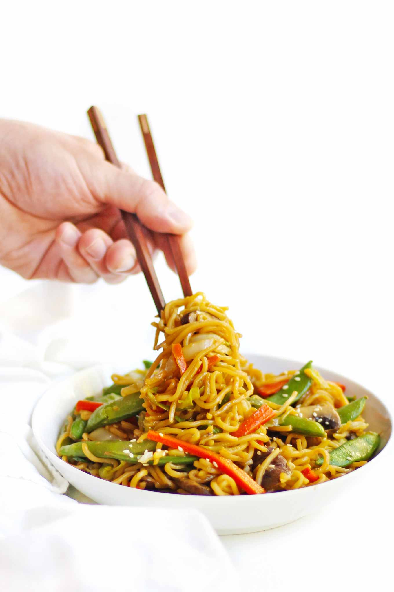

Chow mein

Chinese style noodles
This is a world famous and much loved noodle recipe, there are many variations but keeping it simple this is a basic version that is sure to please all!,
Ingredients you'll need
- Medium egg noodles
- Beansprouts
- White Onion
- Spring Onions
- Oyster Sauce
- Light Soy Sauce
- Dark Soy Sauce
- Vegetable Oil
- Seseme Oil
- Brown Sugar
- Salt and Pepper
How to
- Take one tablespoon of Light soy sauce, Oyster Sauce and Dark Soy sauce and mix in a cup or container add one tablespoon of water and a tablespoon of the brown sugar and mix until sugar is disolved, set aside.
- Gentley preheat a pan with oil while slicing your Onion (half is usually enough for 2) star frying these until turning in colour or softening.
- Cut spring onions to about an inch long and add to the browning white onion in the pan once softened remove from heat and place vegetables in a bowel for later
- Boil some water and soak your noodles (3 nests is more than enough)until soft and ready for frying
- Drain noodles and begin frying them in the pan, this is the time to add the beansprouts as they cook veryquickly
- As the beansprouts cook, re-add the prefried vegetables back into the pan with the noodles and prour in your premade sauce
- Mix until fully incorperated and bon appetie its ready to serve, I prefer mine with chopsticks!